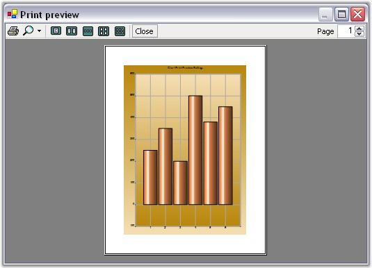
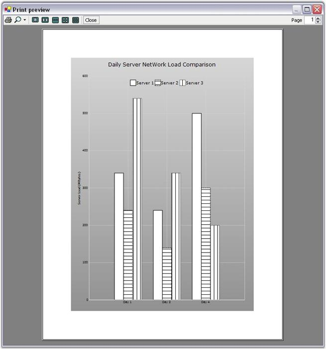

Print Preview
The chart provides a PrintDocument that can be sent to the .NET PrintPreviewDialog to get a preview of the chart that gets printed. Here is some code that shows how this is done.
|
[C#]
PrintPreviewDialog printPreviewDialog1 = new PrintPreviewDialog(); printPreviewDialog1.Document = this.chartControl1.PrintDocument; printPreviewDialog1.ShowDialog(); |
|
[VB.NET]
Me.printPreviewDialog1 = New System.Windows.Forms.PrintPreviewDialog printPreviewDialog1.Document = Me.chartControl1.PrintDocument printPreviewDialog1.ShowDialog() |

Figure 357: Print Preview Dialog Box
Printing
Print a chart control using the PrintDocument exposed by the chart control as follows:
|
[C#]
this.chartControl1.PrintDocument.Print(); |
|
[VB.NET]
Me.chartControl1.PrintDocument.Print() |
You can also specify if you want to print the chart in Color or GrayScale using this property.
|
Chart control Property |
Description |
|
PrintColorMode |
Indicates the color mode during printing. Possible Values:
· Color - Always Print in Color. · GrayScale - Always Print using GrayScale. · CheckPrinter - If printer allows color print in color, otherwise use grayscale (default setting). |
|
[C#]
this.chartControl1.PrintColorMode = ChartPrintColorMode.GrayScale; |
|
[VB.NET]
Me.chartControl1.PrintColorMode = ChartPrintColorMode.GrayScale |
Automatic Grayscale Handling
Setting GrayScale print mode for the chart, lets you print the chart in a gray scale and when multiple series are printed in this case, chart data points are automatically rendered with a patterned brush to differentiate the different series as shown in the image below.

Figure 358: Column Chart with 2nd and 3rd Series rendered with Patterned Brush
A sample illustrating the printing features is available in the below location.
..\My Documents\Syncfusion\EssentialStudio\Version Number\Windows\Chart.Windows\Samples\2.0\Print\Chart Print
Displaying ToolBar while printing
ShowToolBar property should be set to true to display a toolbar in the Chart. You can show or hide the toolbar while printing a Chart using PrintToolBar property.
|
[C#]
chartControl1.ShowToolbar = true; chartControl1.PrintDocument.PrintToolBar = true; |
|
[VB.NET]
chartControl1.ShowToolbar = True chartControl1.PrintDocument.PrintToolBar = True |